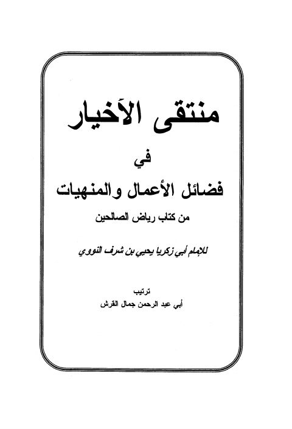

Downloads need an internet connection.
منتقى الأخيار في فضائل الأعمال والمنهيات من كتاب رياض الصالحين
Authors: يحيى بن شرف النووي
Editors: جمال القرش
**▫️ العنوان: منتقى الأخيار في فضائل الأعمال والمنهيات من كتاب رياض الصالحين** ▪️ المؤلف: #يحيى_بن_شرف_النووي ▫️ المحقق: #جمال_القرش ▪️ الطبعة: 1 ▫️ عدد الأجزاء: 1 ▪️ الصفحات: 185 ▫️ نوع الوعاء: #كتاب ▪️ التصنيف الرئيسي: #الحديث_وعلومه ▫️ التصنيف الفرعي: #المسانيد_الأخرى_والجوامع ۪